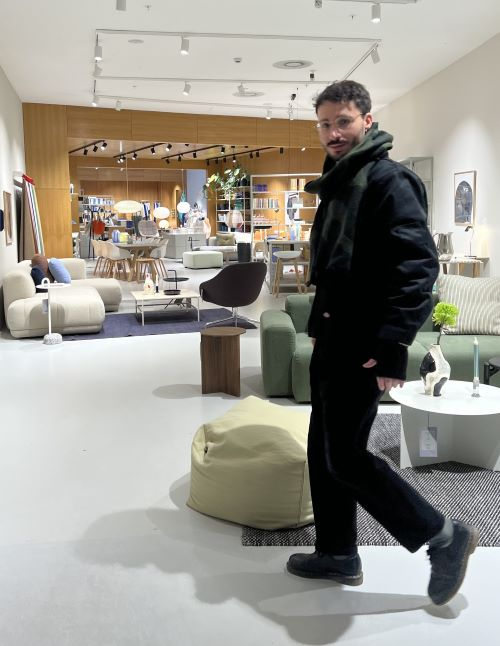
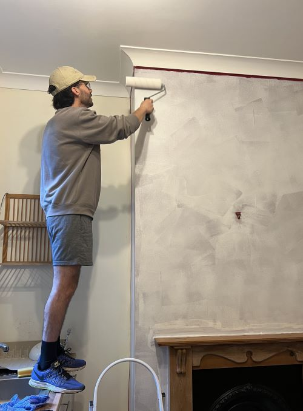
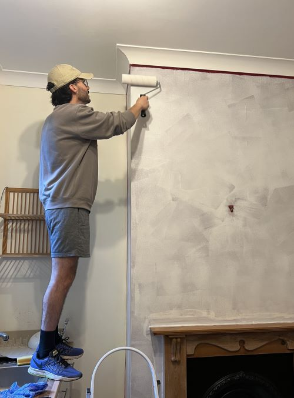
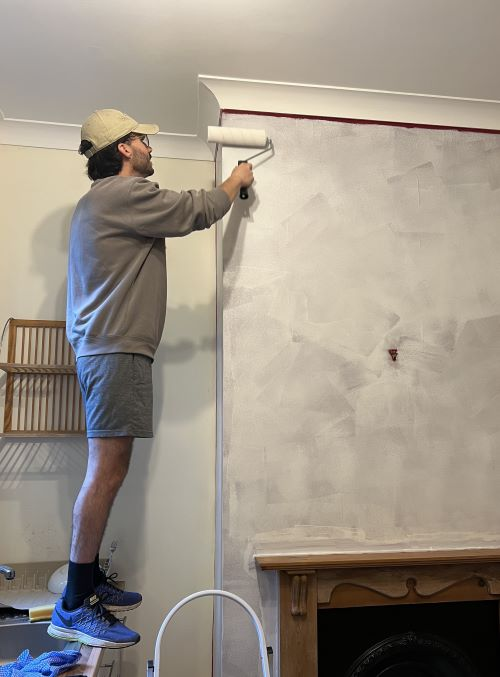

I get the Cloud working hard so you don't have to!
I like spending time building scalable solutions,
automating workflows, and making sure things run smoothly. I'm big on using AWS,
CI/CD, IaC, and a healthy dose of "there's got to be a better way" thinking,
even if that means leveraging existing AI capabilities.
But for someone who lives in the cloud, I'm pretty down to earth. Whether it's a round of golf, a spontaneous DIY fix (yes, I've repainted the kitchen wall midweek just because), or just taking things slow, I tend to really enjoy the simple things.
But for someone who lives in the cloud, I'm pretty down to earth. Whether it's a round of golf, a spontaneous DIY fix (yes, I've repainted the kitchen wall midweek just because), or just taking things slow, I tend to really enjoy the simple things.

 


Hands-On Projects

Smart Portfolio Website
- Designed and deployed a personal portfolio site hosted on AWS S3 with CloudFront as a CDN.
- Implemented a fully automated CI/CD pipeline through GitHub Actions, reflecting updates on every push.
- Integrated live project demos and links to GitHub repositories to showcase cloud and DevOps skills.
- Utilized AWS CloudWatch for continuous monitoring and status tracking.
Outcome: Delivered a dynamic online presence with automated updates, real-time monitoring,
and professional project showcases.
View on GitHub
Real-time monitoring of website status with AWS CloudWatch.
Silent Scalper (In Progress)
- Designed a serverless ingestion pipeline using S3, Lambda, and DynamoDB
- Incoming files uploaded to S3 trigger Lambda to process metadata and validate structure
- Faulty files automatically moved to a quarantine bucket for review
- Critical errors trigger SNS alerts for proactive handling
- Monitoring and error tracking handled via CloudWatch logs and metrics
Outcome (Planned): Build a production-grade, serverless data workflow
with error isolation, alerting, and real-time visibility.
Smart Vault (In Progress)
- Uses Terraform to deploy a complete EC2 backup system using Lambda + EventBridge
- Automatically tags EC2 instances and triggers EBS snapshots on schedule
- Implements retention policies for auto-deletion of old snapshots
- Sends SNS notifications for success/failure events
- Fully managed as Infrastructure as Code
Outcome (Planned): Deliver a scalable, cost-efficient backup system with
snapshot lifecycle automation and full deployment via Terraform.
AI Customer Service Bot (In Progress)
- Incoming messages handled via API Gateway, passed to a Lambda function
- Conversation state stored and retrieved from DynamoDB for context continuity
- Uses AWS Bedrock to generate intelligent, context-aware responses
- Alerts for critical failures sent via SNS notifications
- Full monitoring via CloudWatch metrics and logs
Outcome (Planned): Create a lightweight AI-driven chatbot
architecture that simulates real-world customer service in a cloud-native, serverless setup.
What will I add to your team?

Project Management
Experience with overseeing projects whilst applying best practices, turning plans into results
Experience with overseeing projects whilst applying best practices, turning plans into results

Communication
Fluent in English, Spanish and Portuguese - breaking barriers and building connections through conversation
Fluent in English, Spanish and Portuguese - breaking barriers and building connections through conversation

Costumer Service
Years of customer service taught me how to solve problems calmly and collaboratively - an essential skill in handling cloud operations
Years of customer service taught me how to solve problems calmly and collaboratively - an essential skill in handling cloud operations

Agile Worker
Familiarity with Agile methodologies like SCRUM - Fast delivery, faster value. Because projects wait for no one
Familiarity with Agile methodologies like SCRUM - Fast delivery, faster value. Because projects wait for no one

Fast Learner
Eagerness to understand how things get done. My strongest skill? Learning fast enough to turn problems into strengths
Eagerness to understand how things get done. My strongest skill? Learning fast enough to turn problems into strengths
Now here's a challenge for you